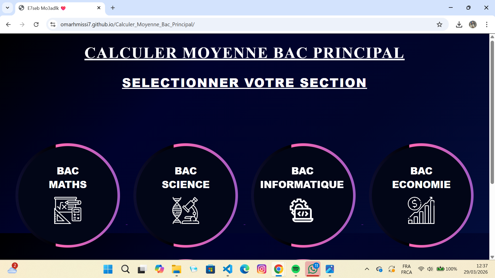
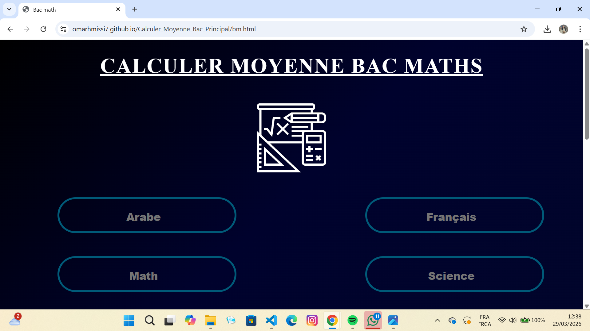
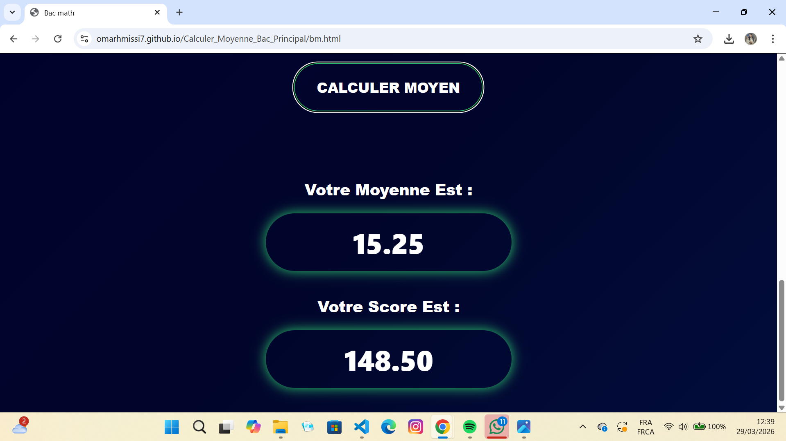

Future Web Developer

Future Web Developer
My PortfolioMy Competitions :
HTML ⭐⭐⭐⭐
CSS ⭐⭐⭐⭐
PYTHON ⭐⭐⭐
JAVASCIPT ⭐⭐⭐
C++ ⭐
Code is how I turn ideas into reality."
Question : why should i choose studying computer scienceComputer science is a field that shapes the future and influences almost every aspect of our daily lives. By studying computer science, I gain the ability to solve real-world problems, create innovative solutions, and turn ideas into reality through technology. It offers endless opportunities, from developing applications and websites to working in fields like artificial intelligence and cybersecurity. In addition, computer science encourages logical thinking, creativity, and independence—skills that are valuable in any career. Choosing this path means being part of a constantly evolving world, where I can grow, innovate, and contribute to building a better and smarter future.
I’m Omar, a passionate web development student from Tunisia, focused on building clean and user-friendly websites. I started my journey by learning HTML, CSS, and JavaScript, and I’m continuously improving my skills by creating real projects. I enjoy turning ideas into simple and functional digital experiences. My goal is to become a professional developer and work on impactful projects, whether as a freelancer or within a team. I’m always motivated to learn new technologies, improve my problem-solving skills, and push my limits in the world of programming.
Building website structure

data structures and bases

Design and layouts

Website interactivity

procedural programming language known for its efficiency

a free visual programming language to create games, stories, and animations
📊 Calculer Moyenne Bac (Session Principale)
- This project is a web application that helps Tunisian students calculate their Baccalaureate average
for the main session.
- The user can enter their grades for different subjects, and the application automatically calculates
the final average based on the official coefficients system used in Tunisia.
Through this project, I learned how to:



Shows random quotes.
- This project is a web application designed to help Tunisian students to calculate their average for the second year of secondary school.
- Users can enter their grades for different subjects, and the application calculates the final average automatically based on the coefficients and system used in Tunisian schools.


Email: omarhmissi33@gmail.com
Tel : +21622420433
visit my Accounts :